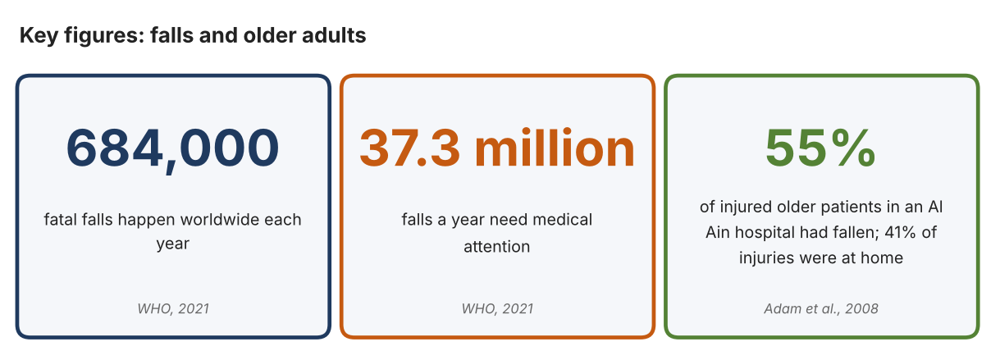
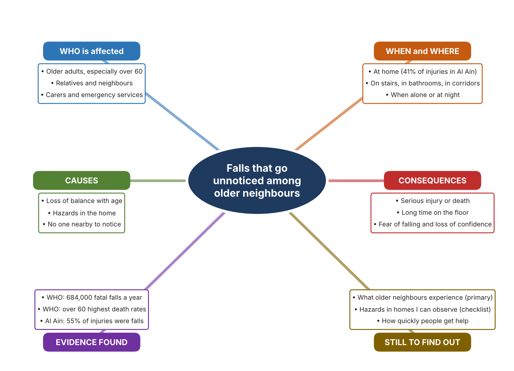
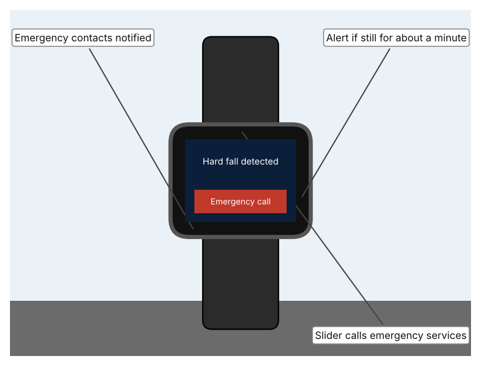
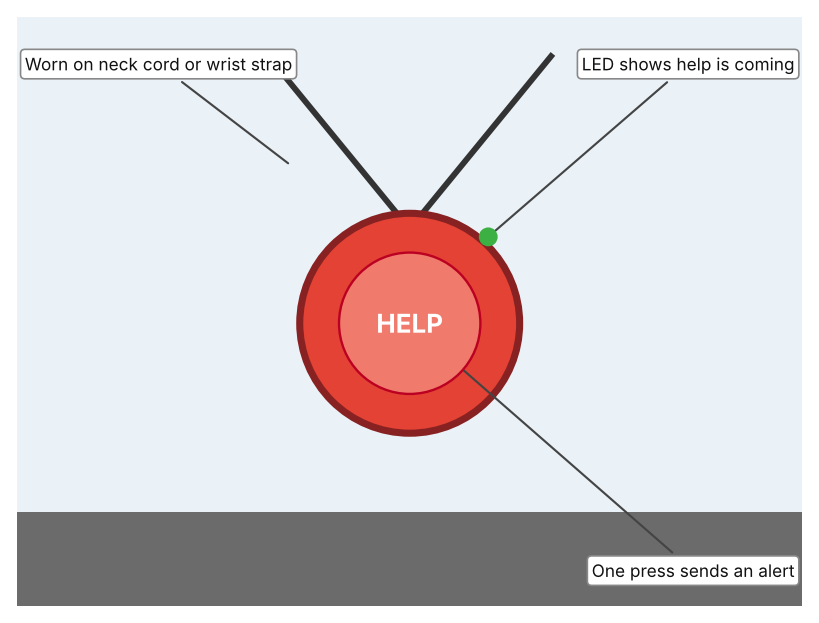
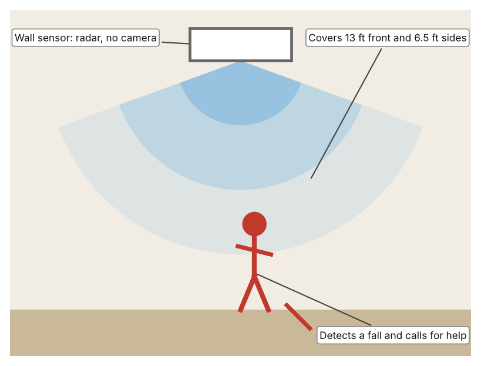

A1 · Design need
Identify and explain the problem faced by your client and community.
My client is the Service Learning Committee of a Dubai school, represented by its Community Service Coordinator. The committee supports older residents who live in the neighbourhood around the school, and its volunteers have noticed that many of them live alone or spend long periods without anyone nearby. The committee is concerned that when an older person falls, nobody may notice for a long time, and it needs the harm caused by falls, and by waiting for help, to be reduced.
The people most affected are older adults, and especially those over 60, who live alone or are alone for part of the day. Their relatives and neighbours are a second group, because they worry about people they cannot see often. Carers and emergency services are a third group, because the response they can give depends on how quickly they find out.
The need is real because falls are common and can be deadly. The World Health Organization estimates that 684,000 fatal falls occur each year, making falls the second leading cause of unintentional injury death after road traffic injuries, and says that adults over 60 have the highest death rates; about 37.3 million falls each year need medical attention (World Health Organization, “Falls”). A study of 121 injured patients over 60 at Al Ain Hospital in the UAE found that falls caused 55% of the injuries and that 41% of injuries happened at home (Adam et al.). An older person who falls at home alone may not be found for hours, which is a danger in itself.
Figure 1 summarises the key numbers. The Al Ain study is small and from 2003 to 2006, so I treat it as a pattern and not as today's exact picture; I still need evidence from my own neighbourhood. In my own words: a fall is a short event, but what happens afterwards depends on whether anyone knows. Figure 2 is my mind map of the problem.
324 words


A2 · Research plan
Six research questions of different types, each with a priority, a research type and evidence.
| # | Question | Priority | Primary / secondary | Evidence | Brief answer |
|---|---|---|---|---|---|
| 1 | Factual: How many people die from falls each year, and who is most at risk? | High | Secondary | WHO fact sheet, 2021 (Appendix A, Source 1) | About 684,000 fatal falls a year; second leading cause of unintentional injury death; adults over 60 have the highest death rates; 37.3 million falls need medical care. |
| 2 | Factual: What do UAE data show about falls among older people? | High | Secondary | Adam et al., 2008 (Appendix A, Source 2) | At Al Ain Hospital, 55% of 121 injured patients over 60 had fallen, 41% of injuries occurred at home and overall mortality was 6%. |
| 3 | Conceptual: Why does a person who falls alone face extra danger, and how can a fall be detected? | Medium | Secondary | Apple support page (Appendix A, Source 3); Vayyar page (Source 5) | A person who cannot get up cannot call for help. Detection uses motion sensors that judge a hard fall, or radar that senses movement in a room; both then raise an alert. |
| 4 | Debatable: Should falls among older people be handled by a wearable the person must remember, by equipment fixed in the home, or by regular visits from people? | Medium | Secondary | Appendix A, Sources 3, 4 and 5 | Wearables go with the person but must be worn and charged; fixed sensors work without action but only in one room; visits give human contact but are not continuous. My view: a mix is best. |
| 5 | Debatable (challenges my assumption, UAE source): Falls are mostly a problem for the very old, so is the problem big enough for a school community? | High | Secondary | Adam et al., 2008 (Appendix A, Source 2); WHO, 2021 (Source 1) | WHO says over-60s have the highest death rates and the UAE study found 55% of older trauma patients had fallen. Conclusion: the problem is large for older residents, but the UAE study is small and old, so my own survey must show it exists near my school. |
| 6 | Factual (primary): What do older neighbours or relatives experience at home, and how quickly could they get help after a fall? | High | Primary | Own home-hazard checklist and survey of older adults (Appendix A, Sources 6 and 7) | [Student data needed: write the checklist counts and survey averages (with permission from each adult), then two sentences on the pattern you see.] |
A3 · Existing products
Three significantly different products, each analysed with ACCESS FM, with pros and cons.
Product 1: Smartwatch with fall detection (Apple Watch)

Illustration by the author based on “Use Fall Detection with Apple Watch,” Apple Support (Appendix A, Source 3). [Student: replace with a photo from the source, cited MLA 9]
Product 2: Personal alarm pendant (Careium Enzo)

Illustration by the author based on “Enzo Personal Alarm Trigger,” Careium (Appendix A, Source 4). [Student: replace with a photo from the source, cited MLA 9]
Product 3: Radar fall sensor for a room (Vayyar Care)

Illustration by the author based on “Vayyar Care Device,” Vayyar (Appendix A, Source 5). [Student: replace with a photo from the source, cited MLA 9]
ACCESS FM analysis
| ACCESS FM | Product 1 | Product 2 | Product 3 |
|---|---|---|---|
| Aesthetics | Worn like an ordinary watch; the support page does not describe styling (Apple). | Pendant with tactile edges so the button can be found by touch; an LED changes colour (Careium). | Wall-mounted unit that is camera-free and discreet; the page gives no description of looks (Vayyar). |
| Cost | Price not given on the support page (Apple). | Included with Careium personal alarm systems; price not stated. | Price not listed; a 30-day money-back guarantee is offered (Vayyar). |
| Customer | People who already wear an Apple Watch; feature is on automatically if the age entered is 55 or over, and the user must be 18 or older. | Older people who want a simple button, with a care or alarm centre receiving the call. | People who live alone in a home with Alexa Together; sold only with that service. |
| Environment | Needs wrist detection and a cellular, Wi-Fi or satellite connection; battery is not stated on the page. | Replaceable battery with automatic monitoring; battery life not stated. | Power needs are not specified (Vayyar). |
| Size | Wearable on the wrist; size not stated on the page. | Neck cord or wrist strap; size and weight not stated. | Covers 13 ft in front and 6.5 ft to each side; large rooms need more than one; stairwells are not supported. |
| Safety | Taps the wrist, sounds an alarm and calls emergency services after about a minute without movement. It cannot detect every fall. Bystander view: a person who is unconscious is still found. | Shower- and bath-safe. Bystander view: relies on the person pressing the button, so it cannot help if they cannot. | Camera-free radar protects privacy and works in all lighting and through steam. Bystander view: visitors in the room are sensed but not filmed. |
| Function | Detects hard falls with sensors; a countdown lets the wearer cancel; shares location with emergency services. | One press sends an emergency alert to the alarm system; works in another room or the garden. | Detects major and minor falls 24/7 and lets Alexa call for assistance. |
| Materials | Materials are not described on the support page (Apple). | Materials are not stated (Careium). | Materials are not stated (Vayyar). |
Pros and cons
| Product 1 | Product 2 | Product 3 | |
|---|---|---|---|
| Pro | Goes everywhere with the person, detects a fall automatically and can call for help on its own. | Very simple, waterproof and easy to find by touch. | Needs no action from the person, works in all lighting and keeps privacy without a camera. |
| Con | Must be worn and charged, cannot detect every fall, and needs a connection. | Does nothing if the person cannot press the button after the fall. | Only covers one room at a time, not stairwells, and is sold only with a specific service. |
A4 · Design brief
Restate the need, summarise the research and the existing products, and state the design intent.
My client, the Service Learning Committee of a Dubai school, needs the harm caused by falls among older neighbours, and by waiting for help afterwards, to be reduced. The problem is serious: about 684,000 fatal falls happen each year, adults over 60 have the highest death rates, and about 37.3 million falls need medical attention (Appendix A, Source 1). In the UAE, falls caused 55% of injuries among 121 older trauma patients at Al Ain Hospital, and 41% of injuries happened at home (Appendix A, Source 2).
My research shows that the time between the fall and the help is as important as the fall itself. A person who falls alone may not be able to call out, so any response depends on someone, or something, noticing (Appendix A, Sources 3 and 5). The WHO lists safer environments and home modifications among its prevention measures (Appendix A, Source 1). My debatable questions led me to decide that no single approach covers every situation, and my challenged assumption (that this is a problem only for the very old) showed me that I need local evidence. The UAE study is small and old, so I will gather my own evidence with the home-hazard checklist and survey, always with permission (Appendix A, Sources 6 and 7).
I analysed three very different existing solutions. A smartwatch with fall detection alerts the wearer, then calls emergency services after about a minute without movement, but it cannot detect every fall and must be worn and charged (Appendix A, Source 3). A personal alarm pendant is waterproof and sends an alert with one press, but it depends on the person being able to press it (Appendix A, Source 4). A camera-free radar sensor covers 13 ft in front and 6.5 ft to each side and works through steam, but it covers only one room and not stairwells (Appendix A, Source 5). They give me three ideas for inspiration: sensing the person, letting the person call, and sensing the room. Each has a weakness that another covers.
My design intent is therefore to create a solution that reduces how long an older person waits for help after a fall, or helps to prevent the fall itself. It must be affordable, easy for an older person to accept and use without training, respectful of privacy and dignity, and reliable at home day and night. I have deliberately not fixed what form it will take. That decision will be made in Criterion B, after I analyse my own checklist and survey against the evidence in Appendix A.
427 words
Appendix A · Research notes and sources
Secondary sources in MLA 9, with notes and where each source is used.
| # | Source (MLA 9) | Key notes | Used in |
|---|---|---|---|
| 1 | World Health Organization. “Falls.” WHO, 26 Apr. 2021, www.who.int/news-room/fact-sheets/detail/falls. Accessed 21 Oct. 2026. | 684,000 fatal falls a year; second leading cause of unintentional injury death; over-60s highest death rates; 37.3 million falls need medical attention; prevention includes safer environments and home modification. | A1; A2 Q1 and Q5; A4. |
| 2 | Adam, Shehabeldin H., et al. “Epidemiology of Geriatric Trauma in United Arab Emirates.” Archives of Gerontology and Geriatrics, vol. 47, no. 3, 2008, pp. 377–82, research.uaeu.ac.ae/en/publications/epidemiology-of-geriatric-trauma-in-united-arab-emirates/. Accessed 21 Oct. 2026. | Al Ain Hospital, 2003–2006: 121 patients over 60; falls 55%, road collisions 32%; 41% of injuries at home; mortality 6%. | A1; A2 Q2 and Q5; A4. |
| 3 | “Use Fall Detection with Apple Watch.” Apple Support, support.apple.com/en-vn/HT208944. Accessed 21 Oct. 2026. | Detects hard falls; alarm and tap; if immobile about a minute, 30-second countdown then calls emergency services and contacts; on automatically if age is 55 or over; cannot detect every fall. | A2 Q3 and Q4; A3 Product 1; A4. |
| 4 | “Enzo Personal Alarm Trigger.” Careium, www.careium.com/en/telecare-solutions/personal-alarms/enzo-personal-alarm-trigger/. Accessed 21 Oct. 2026. | Wrist or neck pendant; one press sends an alert; waterproof; tactile edges; LED confirms help is coming; replaceable monitored battery. | A2 Q4; A3 Product 2; A4. |
| 5 | “Vayyar Care Device.” Vayyar, vayyar.com/care-docs/b2c/. Accessed 21 Oct. 2026. | Camera-free imaging radar; detects falls in all lighting and through steam; 24/7; coverage 13 ft front and 6.5 ft each side; stairwells not supported; works with Alexa Together. | A2 Q3 and Q4; A3 Product 3; A4. |
| 6 | Primary: home-hazard checklist, completed by the student on [date]. Accessed own data. | [Student: summarise your counts.] | A2 primary question; A4. |
| 7 | Primary: survey of [number] people, completed on [date]. | [Student: summarise your averages.] | A2 primary question; A4. |
Primary research instrument 1: home-hazard checklist
Student completes the checklist with permission, in a relative's or neighbour's home.
| Area | Loose rugs or cables (Y/N) | Good lighting (Y/N) | Grab rail or support (Y/N) | Way to call for help (Y/N) | Notes |
|---|---|---|---|---|---|
| Entrance | |||||
| Living room | |||||
| Bathroom | |||||
| Stairs or corridor |
Primary research instrument 2: survey
Rate each statement from 1 (strongly disagree) to 5 (strongly agree). Collect responses with permission and record no names.
| Statement | 1 | 2 | 3 | 4 | 5 | Total responses |
|---|---|---|---|---|---|---|
| I feel safe moving around my home. | ||||||
| If I fell, someone would know quickly. | ||||||
| I can reach a phone or alarm from anywhere in my home. | ||||||
| I worry about falling. |